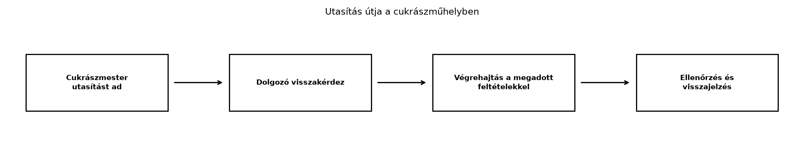

Szombat reggel van. A cukrászüzemben egyszerre készül a hétvégi süteménykínálat, egy esküvői torta és a délelőtti vendégrendelés. Ha ilyenkor mindenki azt csinál, amit éppen észrevesz, a krém kifut, a torta rétegzése csúszik, a pult üresen marad. A jó munkamegosztás, az egyértelmű utasítás és a pontos kommunikáció nem kényelmi kérdés: ettől függ, hogy a termékek időben, biztonságosan és jó minőségben készülnek el.
Képzelj el egy négylépéses láncot a műhelyben:

Ha a láncból kimarad a visszakérdezés vagy az ellenőrzés, a második ember rossz anyaggal, rossz hőfokon vagy rossz időpontban dolgozik. A diagram tehát nem papírmunka, hanem a hibák megelőzésének legegyszerűbb útja.
Definíció. A munkamegosztás a feladatok olyan elosztása a cukrászüzemben, hogy minden dolgozó tudja, mi az ő feladata, miért felelős, és kihez fordulhat, ha döntésre vagy segítségre van szüksége.
A cukrászüzemben jellemző szerepek:
| Szerep | Jellemző feladatok | Felelősség | Kommunikációs irány |
|---|---|---|---|
| Cukrászmester, üzletvezető | termelés tervezése, nyersanyagrendelés, minőség, HACCP, beosztás | a teljes üzem működése | utasít mindenkit, jelent a tulajdonosnak |
| Cukrász szakmunkás | tészták, krémek, kikészítés, sütés | a rábízott termék minősége | utasítást fogad a mestertől, segíti a tanulót |
| Tanuló, szakiskolai gyakornok | előkészítés, mérés, egyszerűbb műveletek, takarítás | felügyelet alatt végzett munka | utasítást fogad, visszakérdez, jelent |
| Kisegítő (eladó, mosogató, csomagoló) | eladás, mosogatás, csomagolás, takarítás | a rábízott terület rendje | jelzést ad a termelésnek |
Szabály. A feladat átadható, de a felelősség csak részben. Ha a cukrászmester átadja a krémfőzést a cukrásznak, a cukrász felel azért, hogy a hőfokot és az időt betartja, a mester pedig azért, hogy megfelelően betanította, és ellenőrizte. A tanuló önállóan csak akkor végezhet gépi vagy hőkezeléses műveletet, ha azt már begyakorolta, és felügyelet mellett dolgozik (ellenőrizendő: hatályos szakképzési és munkavédelmi előírások).
Továbbvitt eredmény. Az itt tanult szerepkifejezések, utasításminták és átadási fordulatok a szakmai idegen nyelvű alfejezetben (Receptek, termékkészítés és munkahelyi kommunikáció idegen nyelven) angol/német megfelelőikkel kerülnek elő, ezért érdemes a magyar kifejezéseket pontosan megtanulni.
Definíció. A munkautasítás olyan szóbeli vagy írásbeli közlés, amely meghatározza, hogy ki, mit, miből, milyen mennyiségben, milyen minőségben, milyen eszközzel és mikorra végezzen el egy feladatot.
A rossz utasítás homályos: „csináld meg a krémet!” A jó utasítás konkrét: „A hűtő alsó polcáról végy 1,5 liter tejet, és a Tojáskrémek I: főzött sárgakrém és vaníliakrém alfejezet technológiai lapja szerint mérj ki hozzá 225 g tojássárgáját, 300 g cukrot és kb. 112 g keményítőt (a lap 800 g tejre 120 g sárgáját, 160 g cukrot és 60 g keményítőt ad, ezt szoroztuk 1,875-del; a tejet 1 liter = kb. 1 kg közelítéssel számoltuk). Főzd fel a krémet a lap szerint, majd hűtsd le gyorsan 5 °C alá, és a tetejére tegyél fóliát. 10:30-ra legyen kész.” A második változatból a dolgozó tudja, mit, miből, mennyit, hogyan és mikorra kell készítenie.
Szabály. Az utasítás fogadója mindig kérdezzen vissza, ha bármelyik elem nem világos. A visszakérdezés nem gyengeség, hanem hibamegelőzés. A legegyszerűbb módja, ha a dolgozó a saját szavaival megismétli a feladatot: „Tehát a vaníliakrémet kéred, 85 °C-ra melegítem, aztán gyorsan lehűtöm, és 10:30-ra kész.” Ha a mester bólint, a feladat rögzült.
Jogszabály. Az 1993. évi XCIII. törvény a munkavédelemről szerint a munkavállaló nem hajtható végre olyan utasításra, amely jogszabályba ütközik, vagy közvetlenül veszélyezteti a saját vagy mások életét, testi épségét, egészségét (ellenőrizendő: pontos szakasz). Ilyen esetben a dolgozó köteles jelezni a veszélyt, és a munka megtagadásáról tájékoztatni a munkáltatói jogkört gyakorló személyt.
Ellenőrzőlista. Jó munkautasítás adása és fogadása.
Írásban akkor érdemes utasítást adni, ha az adatokat pontosan meg kell őrizni: rendelés, receptúra, allergénjelölés, műszakátadás. A szóbeli utasítás gyors, de pontatlan lehet, ezért fontos a visszakérdezés. A digitális üzenet (telefonos jegyzet, üzenetküldő alkalmazás) csak akkor használható biztonságosan, ha a címzett visszaigazolja, hogy elolvasta és érti.
Definíció. A műszakátadás az a rövid, szóbeli és rendszerint írásban is rögzített tájékoztatás, amellyel a távozó dolgozó átadja a folyamatban lévő munkákat, a hűtőben vagy sütőben lévő termékeket, a rendeléseket és a gépek állapotát a következő műszaknak.
A jó műszakátadás tartalma:
A műszakátadás dokumentálására a legegyszerűbb egy műszaknapló vagy átadási füzet. A bejegyzés legyen rövid, dátumozott és aláírt. A cukrászüzemben a műszakátadás nem formalitás, hanem a hűtési lánc és a rendelések biztonságának része.
Szabály. Aki átveszi a műszakot, legalább annyit köteles ellenőrizni, hogy a dokumentált állapot egyezik-e a valósággal: benéz a hűtőbe, megnézi a hőmérőt, leolvassa a sütőt. Ha eltérést talál, azonnal jelezze a mesternek, és csak a tisztázás után folytassa a munkát.
A cukrász legtöbbször nem közvetlenül a vendéggel beszél, hanem a felszolgálón vagy az eladón keresztül. Ezért a rendelésnek írásban is nyomon követhetőnek kell lennie.
A rendelésfelvétel minimális adatai:
A felszolgáló jelzéseit mindig úgy kezeljük, mint a vendég kérését. Ha a felszolgáló azt mondja, hogy a vendég nem kaphat diós díszt, akkor a cukrásznak úgy kell módosítania a tálalást, mintha maga a vendég kérte volna. A félreértés itt nem csak minőségi hiba, hanem adott esetben fogyasztó-egészségügyi kockázat is.
Szabály. Az allergénekre vonatkozó tájékoztatást a 1169/2011/EU rendelet szerint kell nyújtani. A cukrászüzemben a vendég kérdésére mindig pontosan meg kell mondani, hogy a termék tartalmaz-e glutént, tojást, tejet, dióféléket, földimogyorót, szóját, szezámot vagy más jelölendő allergént. A „nem tudom” nem elfogadható válasz: ilyenkor a receptúrából vagy a technológiai lapból kell ellenőrizni.
A panaszokat nem szabad elhallgatni. A felszolgáló a panaszon kívül az időpontot, a termék tételét és a vendég elérhetőségét is rögzítse. A cukrász a hibát a termék és a folyamat szintjén vizsgálja: túl száraz piskóta? savanyú tejszín? elmaradt hűtés? A javítás és a vendég felé történő válaszadás a mester vagy az üzletvezető feladata, de a cukrász feladata a tényszerű tájékoztatás.
A műhelyben gyakori konfliktus: valaki nem érti az utasítást, másvalaki úgy érzi, hogy ő végzi a legtöbb feladatot, vagy egy hiba miatt egymásra mutogatnak. A konfliktus önmagában nem hiba, hanem jelzés: valamelyik folyamatban elakadás van.
A konfliktus kezelésének gyakorlati lépései:
Tilos. A konfliktust nem szabad úgy kezelni, hogy valaki megalázva, megfélemlítve vagy bűnbakként távozik. Az ilyen légkör növeli a technológiai hibák és a balesetek számát, mert a dolgozók nem mernek kérdezni vagy jelezni.
Definíció. A munkaidő-beosztás azt mutatja meg, hogy az adott héten vagy munkaidőkeretben melyik dolgozó melyik napon, hány órát, milyen munkakörben dolgozik.
A cukrászatban jellemző formák:
Jogszabály. A munkaidőre és pihenőidőre vonatkozó alapvető szabályokat a 2012. évi I. törvény, a Munka Törvénykönyve tartalmazza. A cukrászüzemben is irányadó, hogy a napi munkaidő általában 8 óra, a heti munkaidő 40 óra. A hat órát meghaladó munkaidő esetén munkaközi szünet, a munkanapok között pihenőidő jár; a pontos mérték és a munkaidőkeret legfeljebb megengedett tartama a hatályos törvény szerint változhat (ellenőrizendő: aktuális Mt. rendelkezések). Éjszakai műszak, vasárnapi vagy munkaszüneti napi munka esetén a pótlékok és a pihenőnapok szabályait is pontosan kell alkalmazni (ellenőrizendő).
Példa. Egy cukrászüzem hétfőtől szombatig 6:00–18:00 között termel. A heti termelési idő tehát:
Ha egy cukrász heti munkaideje 40 óra, akkor az elvi létszámszükséglet:
A gyakorlatban azonban a szünetek, a hétvégi csúcsidő, a betegség vagy szabadság miatt legalább 3 főre van szükség. A beosztás készítésekor mindig hagyni kell tartalékot: senki ne dolgozzon túl hosszú ideig pihenő nélkül, és a tanuló iskolai elfoglaltságát is figyelembe kell venni.
A munkaszervezés minőségét nem a papírok száma, hanem a műhelyben látható jelek mutatják.
| Ellenőrzési pont | Jó gyakorlat | Hibajel |
|---|---|---|
| Utasítások | mindenki vissza tudja mondani, mit csinál | homályos, kapkodó feladatok |
| Műszakátadás | írásban rögzített, ellenőrzött átadás | hűtőben álló ismeretlen félkész termék |
| Rendelés | írásos, allergénnel ellátott | „valaki mondta a pultban” |
| Beosztás | pihenőidő, tartalék, csúcsidő lefedve | túlóra, fáradt dolgozók, kapkodás |
| Panaszkezelés | rögzített, kivizsgált, tanulság levonva | ugyanaz a panasz ismétlődik |
Hiba: a krém nem olyan lett, mint kérték.
Tünet: a megrendelt tortához hígabb, édesebb vagy más ízű krém
készült.
Ok: az utasítás nem tartalmazta a pontos arányt, hőfokot vagy a krém
nevét.
Megelőzés: mindig a teljes ellenőrzőlista szerint adjunk utasítást, és
kérjünk vissza.
Hiba: a műszakátadás után megromlott egy tejszínes
termék.
Tünet: a munkaasztalon felejtett krém szobahőmérsékletűvé melegedett,
mert az átadáskor senki nem jelezte, hogy még be kell tenni a hűtőbe. A
tételt selejtezni kellett.
Ok: elmaradt az átadás vagy nem rögzítették a hűtési időt.
Megelőzés: minden félkész termékre kerüljön címke dátummal, és az átadó
füzetbe bejegyzés.
Hiba: túlóra és fáradtság miatt baleset
történt.
Tünet: a dolgozó forró cukoröntés közben megégette a kezét, mert
figyelmetlen volt.
Ok: rossz munkaidő-beosztás, nem volt elegendő pihenőidő,
tartalék.
Megelőzés: a beosztás készítésekor tartsuk be a munkaidő-szabályokat, és
ne terheljünk senkit folyamatosan 8 óránál tovább.
Hiba: a vendég allergiás panasza miatt visszahívtak egy
tortát.
Tünet: a torta dióféléket tartalmazott, pedig a rendelésen „diófélét nem
tartalmazhat” szerepelt.
Ok: a felszolgáló nem adta át a módosítást a termelésnek, vagy a cukrász
a korábbi receptet használta.
Megelőzés: az allergénmódosítást írásban rögzítsék, és a technológiai
lapon jelöljék; a termelés csak azzal a lappal dolgozzon.
Egy közepes cukrászüzemben péntek délután a délutáni műszak átvette a munkát. A reggeli műszak szóban elmondta, hogy a hűtőben van két tepsi felvert lap, és kész a csokoládémousse. A délutáni cukrász azt hitte, hogy a mousse-t már ki is adagolták a gyűrűkbe. Valójában a mousse még a habüstben állt. Amikor a rendelést össze akarták állítani, a mousse már 18 °C-ra melegedett, és nem lehetett szépen rétegezni. Ez nemcsak minőségi hiba volt: a mousse nem ismert ideig állt hűtés nélkül, ami a hűtött tárolás kritikus pontjának megsértése. Ezért a tételt selejtezni kellett, az eltérést pedig a HACCP-naplóba beírták (ellenőrizendő: a kritikus határ a HACCP-tervben). A rendelést új mousse-szal készítették el.
Az üzletvezető az eset után bevezette a műszakátadó füzetet. Minden műszak végén a távozó dolgozó három oszlopba ír: mi készült, mi folyamatban van, mit kell azonnal hűteni vagy sütni. Az átvevő aláírja a lapot, és mielőtt aláír, benéz a hűtőbe. A mousse-hiba nem ismétlődött, mert a hiányzó kiadagolás azonnal láthatóvá vált. A tanulság: a szóbeli átadás jóindulatú, de a forgalmas cukrászüzemben nem elég; az írásos, ellenőrzött átadás védi a terméket és a vendéget.
1. feladat (A). Fogalmazd meg egy mondatban, mi a munkamegosztás célja a cukrászüzemben.
2. feladat (A). Írj át egyértelmű munkautasítássá ezt a mondatot: „Készítsd el a marcipánrózsákat, és tedd fel a tortára!”
3. feladat (B). Egy cukrászüzemben 3 cukrász dolgozik. A következő heti termelés: hétfő–péntek napi 12 óra, szombat 8 óra, vasárnap zárva. A tanuló csak hétköznap 14:00–17:00 között ér rá. Készíts egy egyszerű heti beosztást! (Nem kell teljes munkaidő-számítás, elég a munkamegosztás logikája.)
4. feladat (B). Műszakátadáskor a távozó dolgozó a következő szöveget mondja: „A hűtőben van minden, a sütő be van kapcsolva.” Milyen kérdéseket tegyél fel, hogy a műszakátadás pontos legyen? Írj négy konkrét kérdést!
5. feladat (C). Egy esküvői torta rendelésekor a felszolgáló azt mondta a cukrásznak: „A vendég nem kér diót.” A cukrász sietett, és a hagyományos diós betétet használta. Elemezd a hibát a kommunikációs lánc szempontjából! Hol szakadt meg az információ, és mit kellett volna másképp csinálni?
6. feladat (D). Készíts egy egyszerű műszakátadó lapot! A lapon szerepeljenek: dátum, műszak, félkész termékek, hűtőben lévő anyagok, rendelések, takarítási feladatok, aláírás. Töltsd ki egy elképzelt délutáni műszakra, és mutasd meg a mesterednek vagy oktatódnak!
1. feladat. A munkamegosztás célja, hogy minden dolgozó pontosan tudja a feladatát és felelősségét, így a termékek időben, biztonságosan és egyenletes minőségben készülnek el.
2. feladat. Például: „Készíts 24 db sárga marcipánrózsát, egyenként 12 g tömegűt. A sötétszürke étcsokoládé-bevonatú torta felső szélére rakd körbe a rózsákat, 2 cm távolságra egymástól, 14:00-ra.”
3. feladat. Egy lehetséges beosztás:
- Hétfő–péntek: 6:00–14:00 A cukrász (heti 40 óra), 10:00–18:00 B
cukrász (heti 40 óra), 14:00–17:00 tanuló. A hétfő–péntek 6:00–18:00
lefedéséhez két fő elég.
- Szombat: 6:00–14:00 C cukrász. A szombathoz kell a harmadik fő, így
sem A, sem B nem dolgozik túlórában.
- Vasárnap: zárva, mindenki pihen.
- Ha C teljes munkaidős, kedd–szombat 6:00–14:00 dolgozik (heti 40 óra);
ekkor A és B egy-egy hétköznapon szabadnapos, és C fedezi őket.
A tanuló iskolai időbeosztását figyelembe vettük.
4. feladat. Kérdések például: „Milyen hőmérsékletű most a hűtő, és van-e benne félkész krém?” „Milyen termékek várnak sütésre, és milyen sütőhőfokon?” „Melyik rendelést kell holnap elsőként elkészíteni?” „Mi volt az utolsó takarítási művelet, és mit kell átmosni?”
5. feladat. A hiba a felszolgáló és a cukrász közötti írásos átadás hiánya. A dióallergénre vonatkozó kérés szóban elveszett. A rendelésnek írásban kellett volna szerepelnie: „diófélét nem tartalmazhat”. A cukrásznak a technológiai lapon ellenőriznie kellett volna, hogy a hagyományos diós betét helyett milyen diómentes betétet használ. A kész tortát ilyenkor nem szabad kiadni; újra kell készíteni vagy a vendéget pontosan tájékoztatni.
6. feladat. A műszakátadó lap értékelési szempontjai: dátum és műszak megjelölése, félkész termékek neve és mennyisége, hűtő hőmérséklete, rendelések és határidők, takarítási feladatok, aláírás. Az elképzelt kitöltés akkor jó, ha konkrét adatokat tartalmaz, nemcsak „minden rendben”.
A cukrászüzemben a munkamegosztás szerepeket és felelősségeket oszt el: a mester irányít, a cukrász végrehajt, a tanuló felügyelet mellett tanul, a kisegítő a kiszolgálást és a rendet tartja. A munkautasítás akkor jó, ha tartalmazza a feladatot, a mennyiséget, a minőséget, a hőfokot és az időt; fogadáskor vissza kell kérdezni. A műszakátadás csak akkor biztonságos, ha írásban rögzíti a félkész termékeket, a hűtési adatokat, a rendeléseket és a takarítási feladatokat, és az átvevő ellenőrzi a valós állapotot. A vendéggel és a felszolgálóval folytatott kommunikációban az allergének pontos átadása életbe vágó. A munkaidő-beosztás a 2012. évi I. törvény szerinti heti 40 óra köré épül; a pontos szünet- és pihenőidő-szabályok ellenőrizendők. A konfliktusokat nyugodtan, tényekre alapozva, a folyamat hibáját keresve kell kezelni. Továbbvitt eredmény. Az itt tanult szerepek, utasításminták és átadási kifejezések a szakmai idegen nyelvű fejezetben (Receptek, termékkészítés és munkahelyi kommunikáció idegen nyelven) angol/német megfelelőikkel térnek vissza.
A szöveg a biztos munkaszervezési és kommunikációs alapelvekre épül. A munkaidőre, a munkaközi szünetre, a pihenőidőre, a munkaidőkeretre és az éjszakai/vásárnapi munkavégzésre vonatkozó konkrét számokat a hatályos 2012. évi I. törvény (Munka Törvénykönyve) szerint kell ellenőrizni. A munkavédelmi utasítás megtagadásának pontos feltételei az 1993. évi XCIII. törvényben ellenőrizendők. Az allergén tájékoztatás a 1169/2011/EU rendelet szerint kötelező. A tanuló foglalkoztatásának szakképzési szabályai a 2019. évi LXXX. törvény és a hatályos képzési programok szerint ellenőrizendők. A példák tanulási jellegűek, és nem helyettesítik az adott üzem belső munkautasításait.